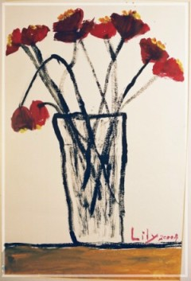

給妳－Lily 院牧部美玲阿姨
親愛的Lily！想到那天到妳病房前面，看到疼痛不已的妳，心中真是有萬分的捨不得，媽媽用盡各樣的方法，都無法讓妳覺得舒服一些，阿姨只好使用最後的法寶－蹲在妳床邊，輕輕吟唱妳最喜愛的那一首詩歌∼雲上太陽，詩歌訴說著天父為妳描繪出一幅美美的畫〝無論是住在美麗的高山，或是躺臥在陰暗的幽谷，當妳抬起頭，妳將會發現，主已為你我而預備。雲上太陽……，它總不改變，……〞，唱著唱著，妳竟然慢慢安靜，且漸漸入睡，媽媽含著淚，感動不已，在無言的對話中，燃起滿滿的感謝。
記得有一次的住院，和爸爸聊起妳治療的辛苦，若非神蹟，如何越過一次又一次的危機！阿姨就順口問Lily：開完畫展，要不要再開一次佈道會，將妳生命的奇蹟與他人分享，讓更多人認識耶穌？爸爸在一旁答道：不可能，她很害羞，長大或許可以。Lily妳卻馬上說：我要！我可以，讓爸爸嚇一跳。如今，妳真的用生命來訴說上帝的大愛－安息主懷。
再見！Lily，雖然捨不得，但相信天父更需要妳這個可愛、快樂的小天使，協助祂彩繪這美麗的世界，讓世界各個角落更有色彩。……雲上太陽，它總不改變，雖然小雨灑在臉上。……哈！它總不改變哦！！親愛的Lily，願我們能在天上再相會哦！
|
 |
•瓶花速寫 花花公子大水彩筆俐落地塗抹，佈局完美地錯落在畫紙上，花莖寫意地插在透明的水杯裡，水杯裡乾筆簡單的畫上花影幾筆，水杯清澈透明，光影的折射躍然紙上，水像活的似的，從杯裡直達瓣間的蕊心。Lily畫這類速寫速度很快，才一轉頭光景，就會興高采烈捧著一幅令人讚嘆的作品。這幅畫被爸媽寶貝地裱了起來，掛在客廳裡。 |